Recipe Links & Ideas |
Among the gazillions of resources out in the world, here are the ones I have found myself gravitating towards over the years.
Books
- Vegan Yum Yum
- The Garden of Vegan
- The Mediterranean Vegan Kitchen
- Ani's Raw Food Kitchen
- Sinfully Vegan
- Vegan Comfort Food
- reFresh Restaurant Cookbook
I don't actually have this last book, but I went to the restaurant in Toronto, ON. It was amazing. NoWhere else can you find five choices of vegan burgers!
- veganblackmetalchef.com
- epicureanvegan.com
- veganyumyum.com
- fatfreevegan.com Another disclaimer: I don't agree with promoting a fat free diet. Fats are essential to a well-rounded diet and are vital for bodily functions. Nonetheless, this website is great for recipes!
- chezbettay.com
- Cheap Fast Vegan Food
-
Dips
- Pumpkin spice cashew "cheese" dip
- Some hummus I have a vague recollection of making and liking
Pasta - Pasta with broccoli-pine nut pesto
- Soba noodles with veggies and almond butter sauce
- Dipping sauce for soba noodles
- Pasta shells filled with soy ricotta spinach and pumpkin
Potatoes - Chickpea Cheeze Sauce Scalloped potatoes
- Crash hot potatoes
- Potato-leek breakfast casserole which looks scary awesome but I haven't tried
Legumes, tofu and other protein - Grilled marinated tofu
- Ultra easy lentils
- Moroccan lentils
- Sprounted lentil burger fried
- Sprounted lentil burger baked
- Quinoa lentil casserole
- Almond portabella mushroom bake
- Here's a useful scribble I found in the margin of a printed recipe:
Black eyed peas sauteed with a tomato pureed, paprika, red pepper flake, pepper and salt.
Veg - Bok choy and green onions
- Teriyaki Eggplant
- Sorry, there's not much in this category because I don't
usually get fancy with veg. I love the taste of super
fresh steamed veg, or a simple saute with oil and soy sauce.
Desserts - Apple crisp
- Cheesecake, pumpkin cheesecake and a graham cracker crust that you can veganize yourself
Jennie's Quick Recipes |
A list of some favorite ideas:
- seiten strips sauteed with vegan worcestershire sauce, soy sauce, garlic and chili/ceyenne/onion powders... with wild rice and pea greens!
- the last bullet's leftovers sauteed with beans and Lee Kum Kee black bean garlic sauce IN TACO with vegan cheeze and greens!
- Orzo stuffed peppers: tomato sauce, thyme, oregano, chili powder, paprika, pea greens and sauteed garlic, mushroom, seitan. Add substitute vegan cheeze by processing macadamia nuts, pine nuts and garlic.
- rice, beans and kale!
- Trader Joe's tofu burger on a sesame bagel with soy cheese and pan fried greens
- A bagel sandwich: half edamame hummus, half cilantro-jalapeno hummus, falafel, tofutti ricotta cheeze, avacado, fresh basil, onion and green pepper
- falafel or sunshine burgers in a salad or sandwich !
Super Quick Curry Kale & Potatoes

- Cut up small potatoes and cook: boil or bake. Optional: add any spices/oil. You can use leftover potatoes or stockpile potatoes for the week -- this makes the recipe Super Quick!
- Curry spice pack does not need to match exactly as shown! You can find something similar at your local Indian Grocery store.
- Combine in pot:
- 1 tbsp curry spice for each 1/2 cup of water (double check against spice packet instructions, may vary)
- cooked potatoes and raw kale, any amount desired
- Boil until heated.
- Amounts are easily customized. Add more water/spice if more of a soup consistency is desired.
- Contents are easily customized. Use any veg!
Quick Pesto Cauliflower Stirfry

- Fry with small bit of oil: frozen riced cauliflower, chopped onion, sweet corn, and brocolli bits.
- Once thawed add vegan pesto to the pan, cook for 5 more mins.
Customizable Sprout & Veg Stirfry
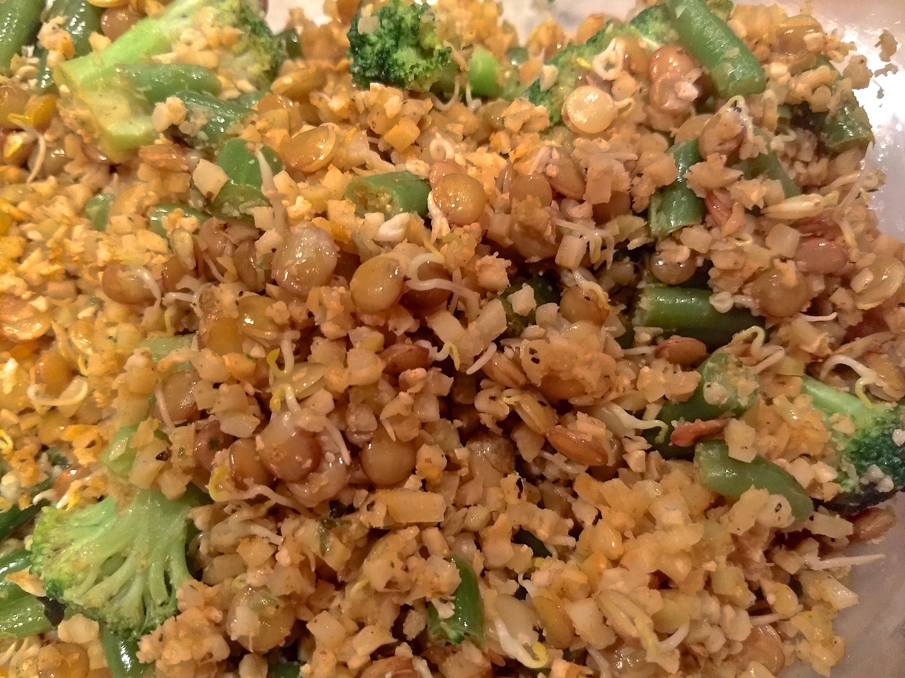
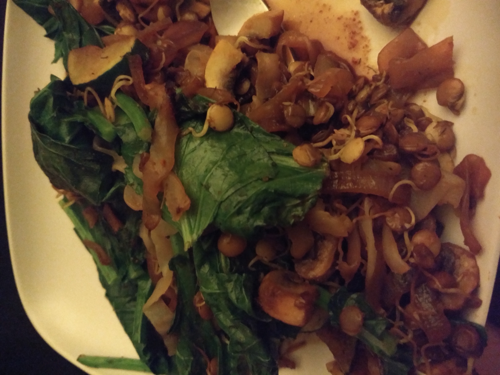
left pic = cauliflower rice version (no soy sauce), right pic = miracle noodle version (w/ soy sauce)
- Fry with small bit of sesame oil any green veggies:
- frozen broccoli
- frozen green beans
- Throughout cooking process add spices: garlic, onion powder, ginger, paprika, pepper, salt, other spices you prefer
- Once frozen veg almost cooked also add:
- either riced cauliflower (frozen, packaged, or home-riced) or miracle noodles
- sprouted lentils (here's a sprout video).
- any other fresh veg such as sliced mushroom or zucchini
- Top with fresh greens, if you got 'em!
- Soy sauce or Braggs Liquid Aminos will give it that stirfry taste.
- Optional: nutritional yeast, ether while cooking or afterward.
MEGAVEG Stirfry

- Fry with small bit of sesame oil :
- sesame seeds
- garlic & ginger
- sliced red onion
- miracle noodles
- Also boil frozen veggies:
- cauliflower, broccoli, squash/zuchini mix
- peas
- brussel sprouts
- Once the frying pan mix is very fragrant and the boiling veggies are fully cooked, strain the veggies and toss them into the pan with the rest. Mix up and add fresh greens for a few more minutes, adding a bit of soy sauce too.
- Optional: nutritional yeast, ether while cooking or afterward.
Vegan Paleo-ish Tacos

- I made this walnut taco mix recipe, but I fried it so it's not raw.
- Then I added in this soy-based vegetable protien mix in order to give it a more realistic taste.
- Added to the saute: garlic powder, chili powder, soy sauce, sliced carrots, and chopped kale
- Top with your favorite vegan sour cream and cheese shreds.
- Enjoy in paleo friendly taco shells
Jennie's Awesome Pesto Mush
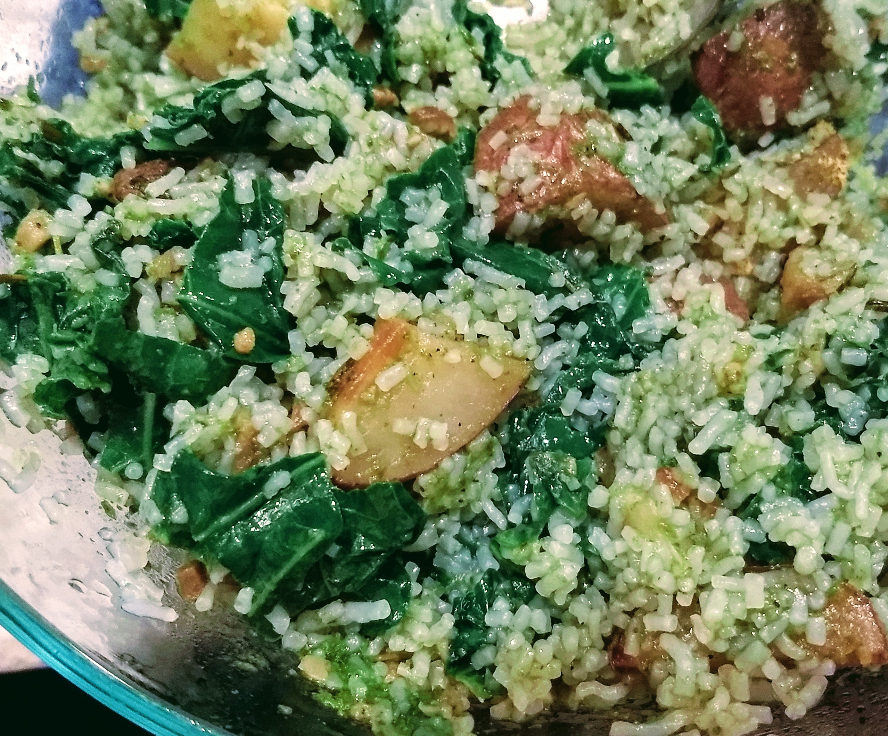
- Use fresh vegan pesto from your local health food store.
- Mix pesto, amount to taste, together with:
- leftover or pre-cooked spiced/baked potato chunks
- a package of miracle rice (or miracle noodles) rinsed
- a few handfuls of de-stemmed kale pieces
- Microwave for a few minutes until heated.
Sesame Delight
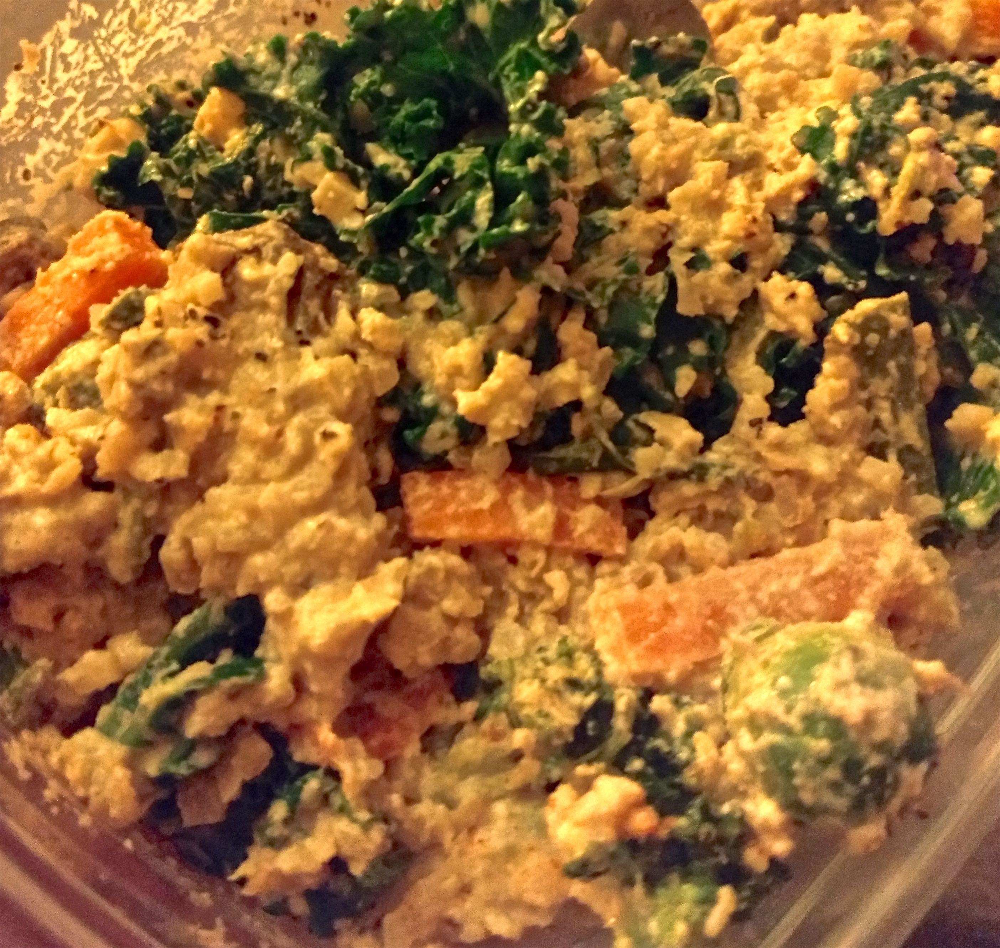
- Saute frozen brussel sprouts, carrot, any veg, and sesame seeds too until browned.
- Add riced cauliflower too.
- Add spices: ginger, paprika.
- While above is cooking, mix the tahini miso sauce in a food processor. Below is the rough ratio which you can multiply as needed based on quantity.
- 1 tbsp miso (any kind)
- 1 tbsp tahini
- generous amounts of garlic and onion powders, whatever seems right!
- 1/4 cup unsweetened milk (almond, coconut, any)
- 1/2 cup water
- Add the sauce and a little kale into the pan, then let everything warm for a few more minutes.
Less Boring Salad

- Salads can be boring. Choose greens you are excited to eat like:
- Pea Greens!
- Red Curly Kale!
- Use something yummy like Kite Hill Vegan Ricotta cheese
- Add fresh tiny tomatoes, black olives, and walnuts or spiced pepitas!
Tempeh Salad for lettuce wrap
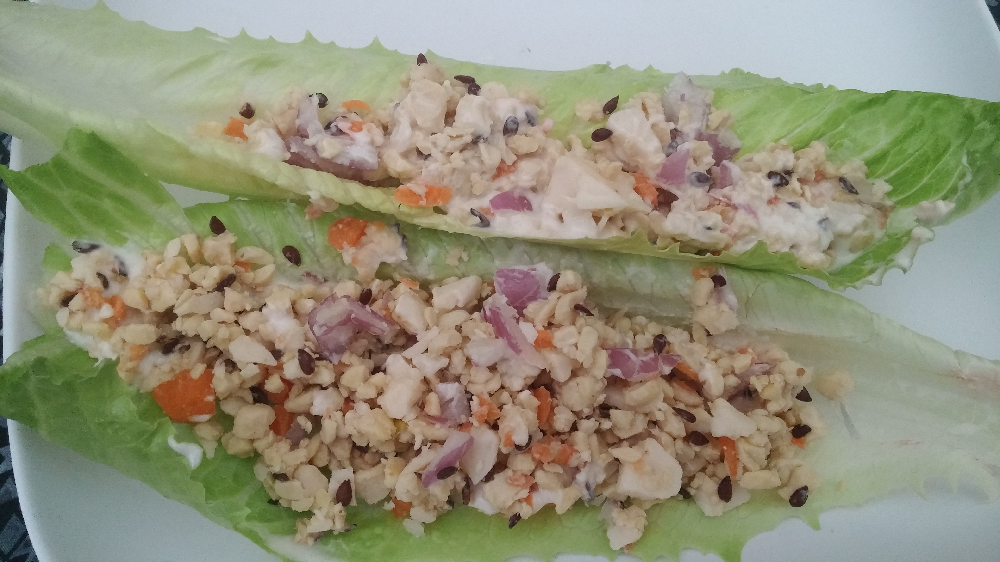
Put in a food processor:
- 1 block raw tempeh, any type
- 1 regular sized carrot
- 1 small red onion
- small blob vegan cheese (optional)
Jennie's Awesome Miso Garlic Soup
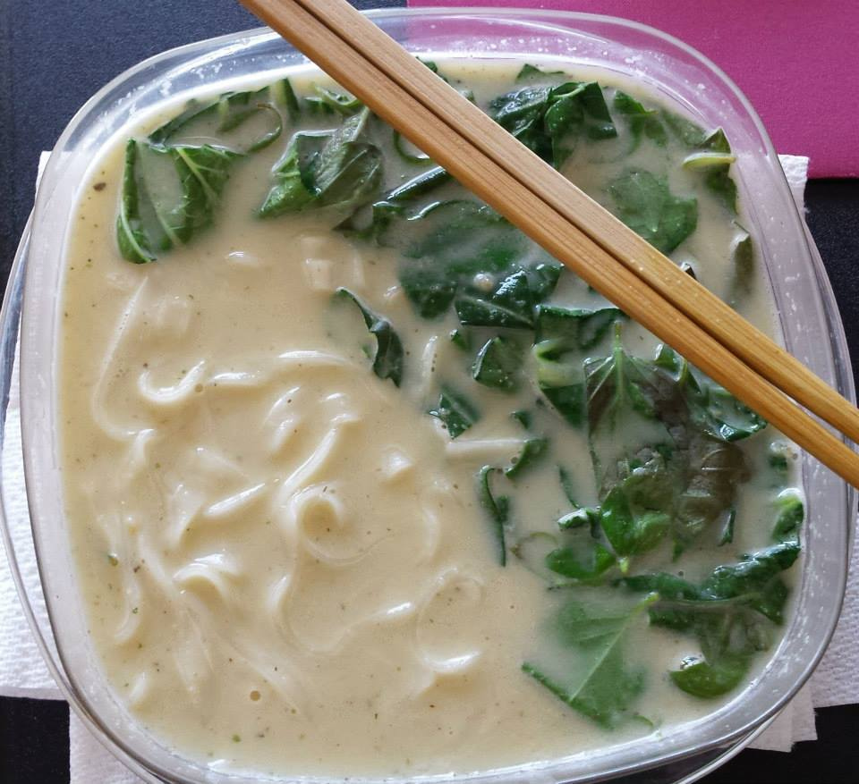
I list this recipe per-two-cups, so multiply by however many cups you desire.
I'm not sure how most people manage to make miso soup that is smooth, mine always comes out lumpy. :/
So I devised this GENIUS PLAN: put the following items in a blender !!!
- 2 cups of water
- 2 tbsp white miso paste
- 1 tbsp garlic powder
- 2 tsp veg. broth base (optional)
Drain the noodles. Finally put everything below into a pot and simmer it all, heating gently until warm enough to eat.
- the miso/garlic/broth mixture from the blender
- the drained cooked rice noodles
- one handful of fresh chopped bok choy leaves
- one handful of fresh basil leaves
- one handful of small cubed firm tofu
Baked & "Breaded" Tofu

- Press a block of tofu for about 15mins. You can do this by stacking a plate and some cans on top of the fresh block of tofu.
- Cut the block into slices.
- Soak each slice for a few seconds into a pool of soy sauce.
- "Bread" each slice using a mix of nutritional yeast, garlic powder, curry powder, and tumeric. (sorry, I didn't measure! use your judgement)
- Lay each piece flat and bake at 400-deg for 20-25 mins.
Lentil Cilantro Tahini Spread ("Lentil Hummus")
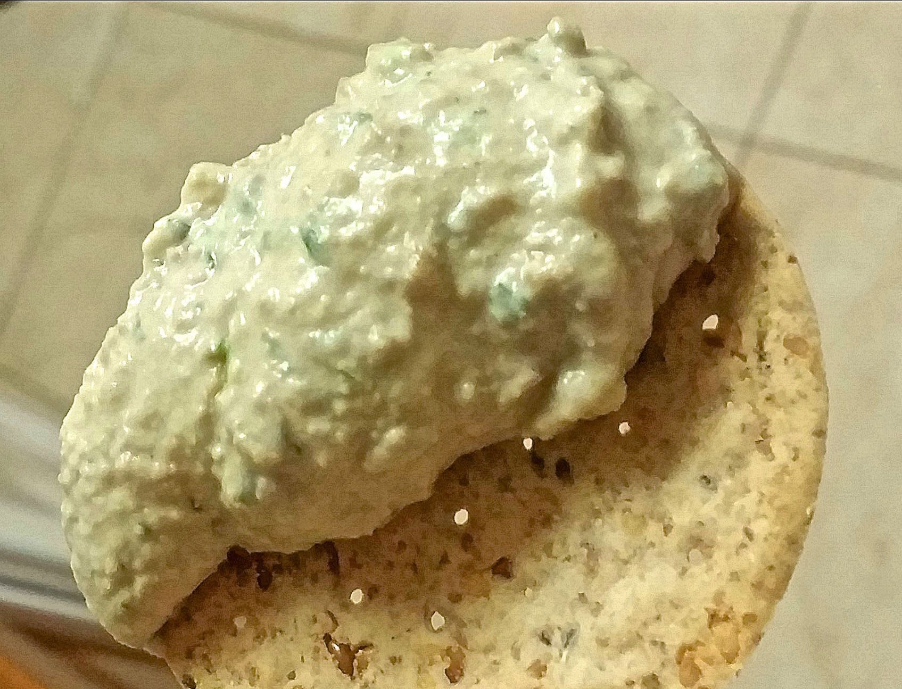
- Put into food processor or blender:
- 2 cups sprouted lentils, or 2 cups cooked brown lentils (probably any color is good!)
- 1 cup tahini (highly recommend ethiopian or israeli)
- juice from 1 small lemon
- 3-4 garlic cloves
- 2 tbsp onion powder
- pinch of salt
- one handful chopped cilantro
- tiny bit of water, add as needed, JUST enough to blend well
Veggie and/or Fruit Muffins
(good recipe for the shredded veg/fruit that is left over from juicing!)
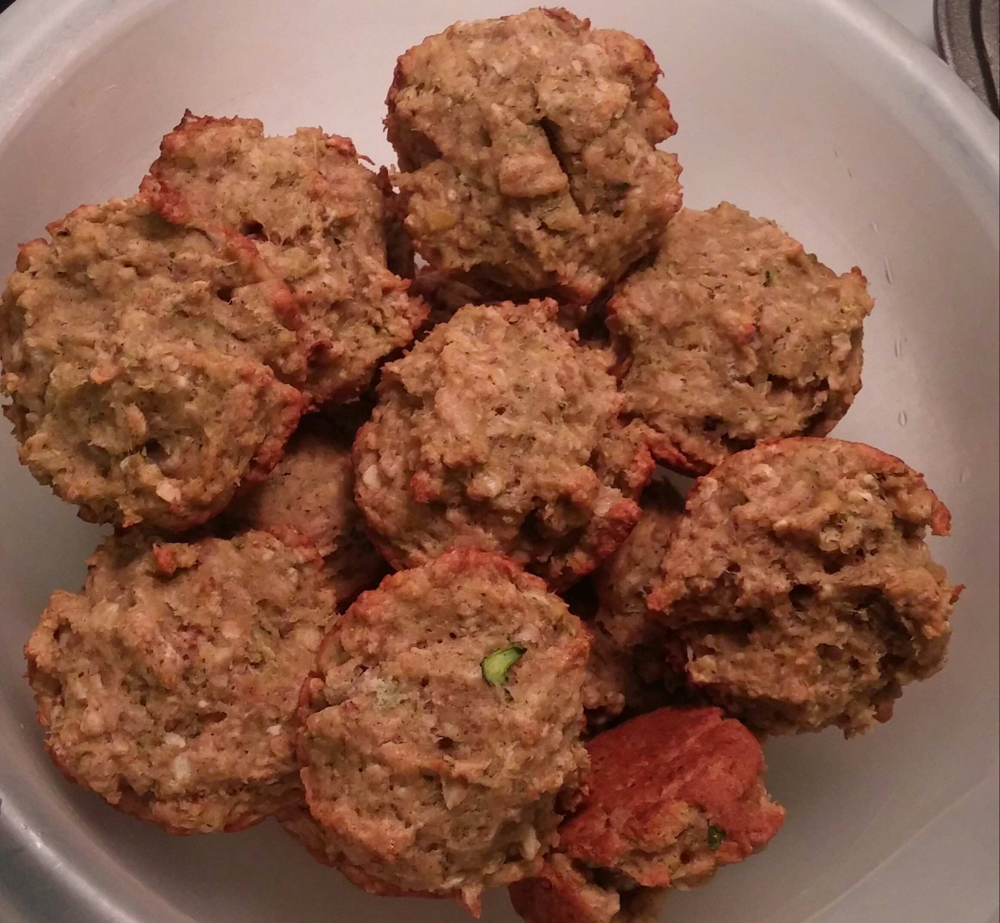 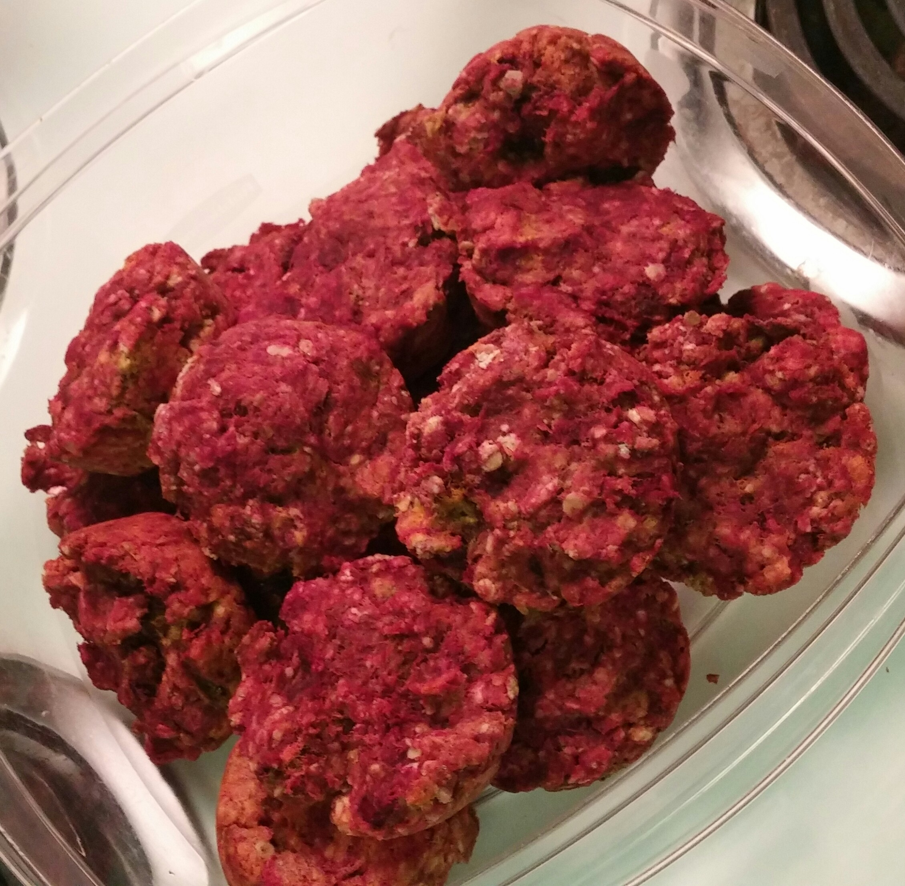
left pic = zucchini-apple, right pic = beet-carrot
- Preheat oven to 350 deg.
- Mix dry ingredientns in large bowl:
- 1.5 cup oats
- 1.5 cups flour
- 1/2 cup sugar
- 2 tsp baking powder
- 2 tsp cinnamon
- 1/2 tsp salt
- Mix liquids in small bowl:
- 2 tsp vanilla
- 2 tsp egg replacer powder
- 1/3 cup water or milk of choice (soy, coconut, cashew, hemp, whatevs)
- 1/3 cup oil of choice (I like coconut)
- Pour liquid mixture in with dry ingredients. Then add 2 cups grated/shredded veg and/or fruit. Here are some ideas:
- 1 cup apple, 1 cup zucchini
- OR
- 1 cup zucchini, 1 cup carrot
- OR
- 1 cup carrot, 1 cup beet
- OR any other combo
Quick Chick Pea Salad

- Mix in large bowl:
- 2 cans well-rinsed chick peas
- 8-10 baby carrots shredded in blender or chopped
- 1/2 red onion chopped
- 2-3 small salad tomatoes chopped
- 3 celery sticks chopped
- enough chopped kale and/or basil to look nice (eyeball it)
- enough sliced olive pieces to look nice
- Pick your spices to taste: paprika, onion powder, mustard powder, salt, pepper, and/or nutritional yeast
- I prefer to refrigerate without adding any sauces, then add sauces on serving (stays good longer). For sauces, pick your preference(s) to taste: vegan mayo, dijon mustard, and/or tahini. My favorite sauce is the Peanut Tahini Sauce seen below (scroll down to soba noodle recipe, same sauce is great here too!)
Quick Soba Noodles
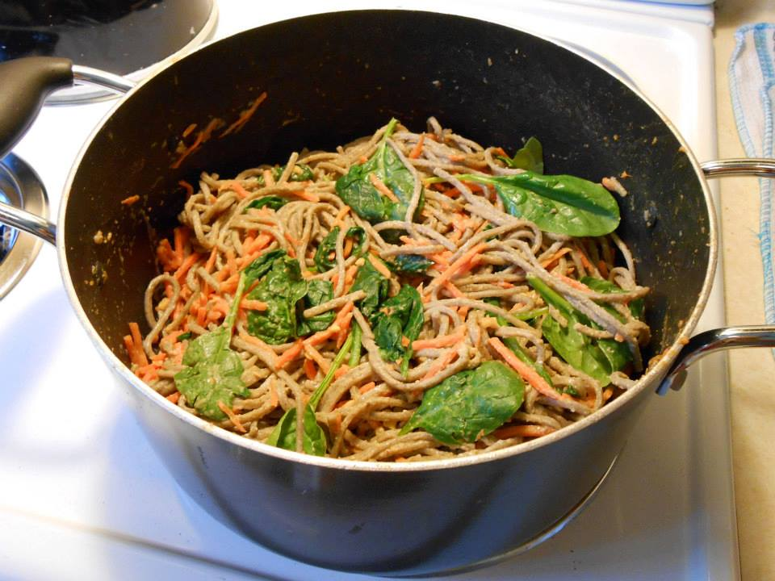
- Cook a 12oz box of soba noodles according to directions
- In last minute or so of cooking, add to water spinach and julienned carrots. Drain when veggies tender and pasta cooked.
- Make Peanut Tahini Sauce:
- 1.5 tbsp natural peanut butter
- 1.5 tbsp tahini (such as Mighty Sesame brand or Shirley Bar Ethiopian Tahini... or wholefoods brand is good too!)
- 1.5 tbsp Annie's Goddess dressing
- 1.5 tsp soy sauce
- a few splashes of water and some crushed garlic to taste
- Mix the noodles and veggies with the sauce.
- This dish is great with nutritional yeast and black pepper !
Mac and Cheeze (Pic shows cauliflower & potato version)
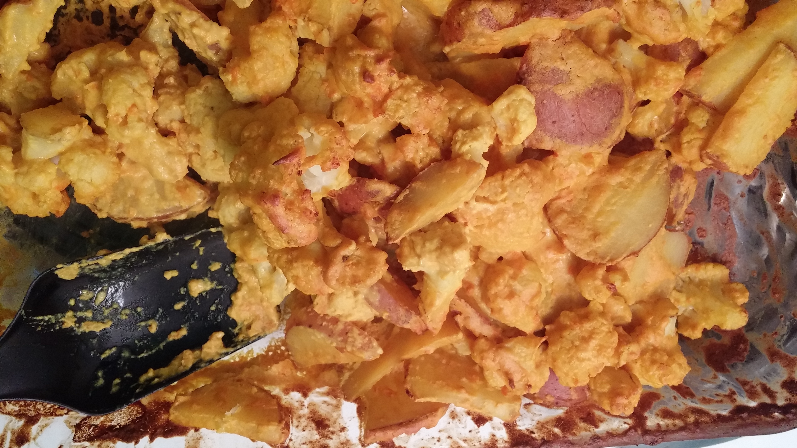
I've tried many different versions of vegan mac and cheeze, the most successful of which came from the VeganYumYum site. Eventually I came to slightly modify the recipe based on the ingredients and dish size that have the highest probability of being found in my kitchen. Here goes, this makes 8 servings:
- Preheat oven to 400 deg.
- If you want the pasta version, make one 16oz package of brown rice pasta according to package, but cook for 2-3 minutes less than instructions (it will finish cooking in the oven). Any pasta is ok here.
- If you want the cauliflower version, cut up one large cauliflower head into small pieces. Then boil the pieces for about 5 minutes (it will finish cooking in the oven).
- If you want the potato version, cut up 7-8 medium size potatoes. Then boil for about 5 minutes (it will finish cooking in the oven).
- Mix the following cheeze sauce ingredients in food processor or blender:
- handful of raw unroasted/unsalted cashews
- 1/2 can chickpeas
- 1 small carrot
- one inch x one inch small cut piece of daiya gouda style vegan cheese
- 2 tbsp Earth Balance margarine
- 2 tbsp miso
- 2 tbsp tahini
- 2/3 cup nutritional yeast
- 2 tbsp tomato paste or 2 small salad tomatoes
- 1 tsp dijon mustard
- 1 tsp garlic powder or fresh garlic
- 1/2 tsp paprika
- 1 tsp tumeric
- small amount of water, just enough to blend smoothly
- Mix partially cooked pasta or cauliflower with cheeze sauce in 2 quart casserole dish.
- Optionally top with bread crumbs.
- Bake for 20-25 minutes.
Potato Salad
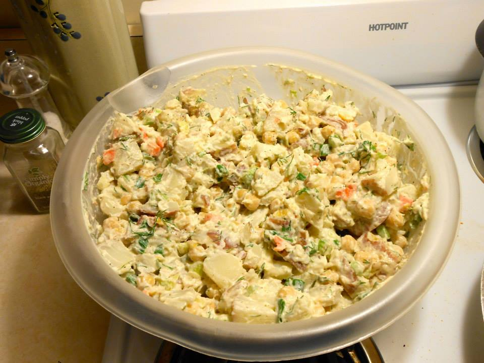
- Clean and cut 3lbs of potatoes into 1 inch cubes, then boil in large pot for 20-25 minutes or until pleasantly tender and eatable. Most recipes comment here that the cubes must be evenly sized or else the salad can be part crunchy part mushy -- slight variances are OK I think, but big differences in size may have an effect.
- Drain potatoes and let cool.
- Combine in large bowl:
- 2 finely diced celery stalks
- 1 finely diced large carrot
- 1 finely chopped small onion
- 1 15oz can of chickpeas, rinsed
- 1 cup veganaise
- 1/4 cup chopped fresh dill
- 1 tsp mustard powder
- 2 tbsp nutritional yeast flakes
- 1/2 tsp onion powder
- 1 tbsp paprika
- salt and pepper to taste
- After potatoes completely cooled, mix potatoes with other ingredients.
- Eat same day. Potato salad is not a food that ages well!
Quiche

- Preheat oven to 375 deg.
- In skillet saute the following until fragrant. Don't overcook here as some additional cooking will take place in the oven.
- 2 tbsp oil
- 2 cloves garlic
- 1 finely diced small onion
- 5-6 finely diced baby bella mushrooms
- 2 cups chopped spinach leaves
- 1 finely diced large carrot
- 4-5 finely diced brocolli florets
- 10 chopped fresh basil leaves
- In food processor, blend the following ingredients in the following order (dry first, wet later):
- 1/2 cup raw unsalted cashews
- 1/2 cup nutritional yeast flakes
- 1 tsp oregano
- 1 tsp curry powder
- 1 tsp paprika
- 1 16oz package firm tofu
- 1/2 block vegan gourmet cheese
- few tbsp unsweetened vegan milk, just enough to help the blending -- not too much or quiche won't firm up later
- salt and pepper to taste
- Mix up the sauteed ingredients and processed ingredients, then plop it all into a vegan pie crust. I like to use a store-bought crust -- you can also find or make a gluten free crust.
- Bake for 45-50 minutes until toothpick inserted comes out mostly clean.
Quick Chili

- Make this box of chili (just boil, and add tomatoes and tvp as instructed).
- Chop and saute separately:
- garlic
- 2 carrots
- 1 onion
- 2 green peppers
- Mix all together.
Stuffed Zucchini
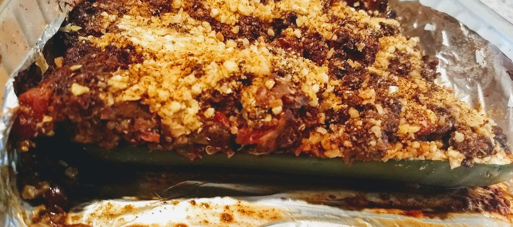
- Slice in half 3 large size zucchinis and bake them with a small amount of water in the pan at 375deg for 5 minutes to soften.
- Make chili recipe above.
- For a more paleo-friendly version of the chili replace tvp with veg such as riced broccoli.
- Scrape out the insides of the softened zucchinis. You can add this to the chili or use it for juicing.
- Fill zucchinis with chili mix.
- Top with breadcrumbrs or garlic-cashew-nutritional-yeast powder (I made this with a food processor. I didn't measure.).
- Bake at 375 deg for 35-40 mins.
Deviled "Eggs" ... that are really potatoes
This recipe came from my sister -- I'm not sure where she found it but everyone in the family was raving about these snacks!
- Preheat oven to 350 deg.
- Peel and half 6 new potatoes. New potatoes are also called Klamath Potatoes -- they should be sort of egg shaped.
- Grease a cookie sheet.
- Coat all sides of each potato with olive oil. Place potatoes face down on the cookie sheet.
- Bake for about 45 minutes, or until soft (but not too mushy).
- While the potatoes are roasting, mix together:
- 4 tablespoons vegan mayonnaise
- 1 teaspoon yellow mustard
- 1 to 2 tablespoons finely chopped onion
- dash hot sauce
- dash garlic powder
- salt and pepper to taste
- dash turmeric, optional, for yellow color
- When the potatoes are done, allow to cool a bit, and then use a sharp knife to cut into the flat side of each potato and hollow it out with a spoon. You want to be left with a little cup-shaped potato.
- Add the scooped-out potato mash to your mayo/mustard mix and blend well. You can then fill the hollowed out potato shells with the mixture -- pipe it on with a cake decorating bag or just blop it in there.
- Dust each potato with paprika.
Avocado Garbonzo Salad for lettuce wrap
Here's a picture (I forgot the lettuce wrap!).

First marinate the "vegan feta" by letting the following items sit in a bowl for 10 minutes:
- 1/2 block of firm tofu, cubed
- 2 tbsp olive oil
- 2 tbsp lemon juice
- 1 tsp oregano or other green spice
- few dashes of black pepper
- vegan feta (see above)
- 1 can of rinsed, drained pinto beans
- 1 can of rinsed, drained chick peas
- 1 can of rinsed, drained tomatoes (chop if necessary)
- 1/2 big white onion, chopped (maybe 1 red onion chopped would be better...)
- 2 cups of raw kale, sliced into strips
- 2 handfuls of fresh basil leaves
- 1 tbsp sriracha vegan mayo, just mayo brand
- 1 tbsp Annie's dijon mustard
- diced avocado
- dust paprika on top